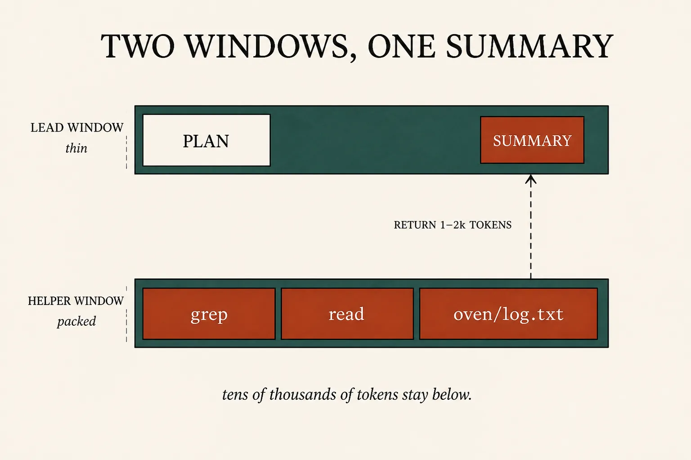
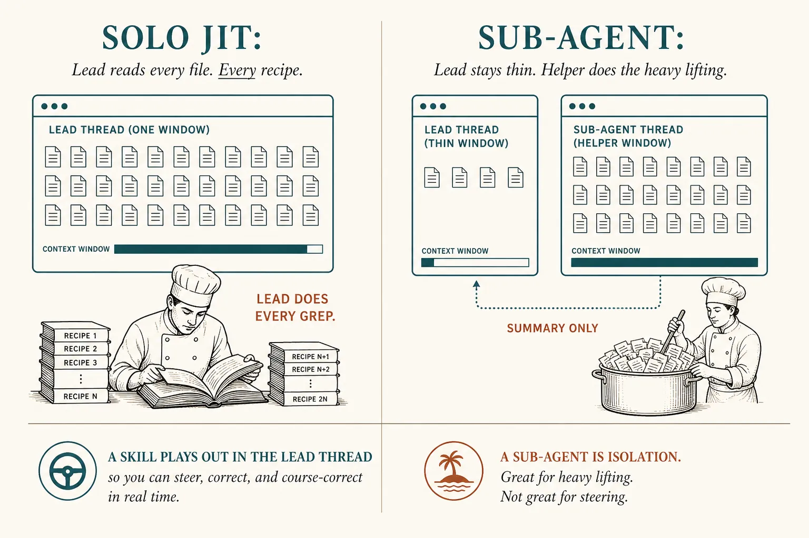
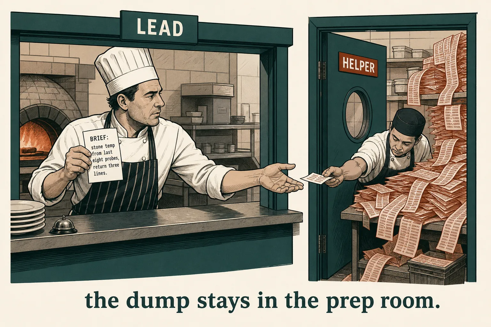

Context engineering
The helper gets a clean window
Lesson 0010 still fills your RAM if you do every grep. A sub-agent is a second loop with its own window. You keep the plan. They keep the dumps. You take back a short summary.
What this is. Anthropic’s third long-horizon lever, after compaction and notes: specialized helpers with clean context windows. Each may spend tens of thousands of tokens exploring; the lead gets a distilled summary (often 1–2k). Effective context engineering · “Sub-agent architectures”
What this is not. A second model (it often inherits yours). A skill (that plays out in your thread). Agent teams, worktrees, or a 15-agent research swarm — parked. Not a ChatGPT menu item named “Subagent.”
- 1 · IsolateHelper RAM is a second bar. Search dumps never hit the lead.
- 2 · BriefObjective, format, bounds. Vague briefs duplicate work.
- 3 · ReturnA short note, not the transcript. Then the lead picks.
Same agent loop as 0006. Same harness as 0007. Tonight is whose window the greps land in.

Claude Code’s worked picture: helper read 6,100 tokens of files; you got ~420 back, plus a small metadata trailer. Context window
The lead coordinates. The helper explores.
One agent trying to hold the whole project is how windows die. The lead keeps a high-level plan; helpers do the noisy search. Separation of concerns: detailed search stays isolated; the lead synthesizes. The research-system writeup names the same move as compression — distill a corpus in a window you are willing to throw away. How we built our multi-agent research system
You are sitting in this: Cursor’s Explore / Bash / Browser helpers exist because those jobs spew logs. Cursor · Subagents

Architecture first. Kitchen below is optional.
One ticket · last hour’s stone
# SOLO JIT — lead does every read
Grep("temp_c", "oven/") → 8 log hits
Read(p1) Read(p2) … Read(p8) # 6k+ tokens now in LEAD RAM
# SUB-AGENT — second window
Agent({
type: "explore",
prompt: """
Objective: last eight oven probes.
Format: three lines (start, end, target).
Bounds: oven/ only. Return no dumps.
"""
})
# helper greps in ITS window
# lead receives:
# 180°C → 188°C. Target 240. Unresolved: preheat.
What this shows. The question did not change. Whose RAM paid for the logs did. Cursor: the parent must put the needed facts in the brief — the helper has no prior conversation. Anthropic: teach the orchestrator to delegate (objective, format, tools, bounds) or helpers duplicate searches.

The dump stays in the prep room. The pass only sees the three-line slip.
The brief is the match
Same lesson as a skill description (0008). Claude Code uses the sub-agent’s description to decide when to delegate. A prompt that says “look into the oven” is how you get refunds/ and a 2021 stone story in the summary. Write what success looks like, what to ignore, and how short the return should be. Create custom subagents
Skill: watch the lead’s bar
Solo is JIT in the lead window. Isolate opens a helper bar. Vague brief still pollutes the return. Sharp brief is the three-line note.
Same ticket, two windows
Lead window
Helper window
Skill in the thread, helper off-stage
Skill (0008)
Chapter loads into your window. You see and steer each step. Use when the procedure is the work.
Sub-agent (tonight)
Side task that would flood you with logs. Isolation is the feature. Cursor: if it is a one-shot format job, it is a skill.
You already sit in one: Cursor’s Explore is a read-only helper so codebase search does not bloat the parent. Claude Code’s Explore is the same idea. The product names differ; the rent is the second bar.
Parked: spinning many helpers in parallel (Anthropic’s Research feature; ~15× the tokens of a chat — only when the task pays). Agent teams, git worktrees, cheaper-model routing. Loop engineering — designing the cycle that prompts the agent — is next, not a second helper.
Check
Primary source. The sub-agent paragraph in Effective context engineering, then the isolation numbers in How we built our multi-agent research system (search is compression; brief the helper). Product form: Claude Code sub-agents and Cursor subagents — you are sitting in the second one.
Card: sub-agents. Last path: just-in-time. Last folder: skills.